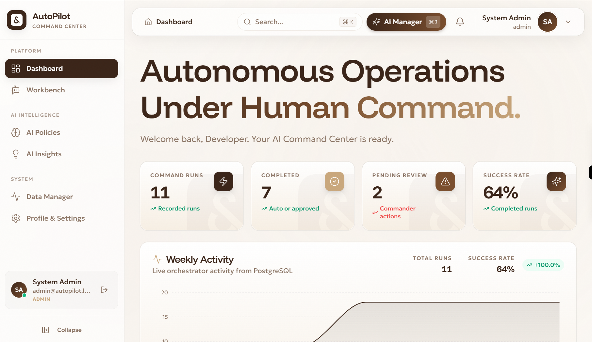
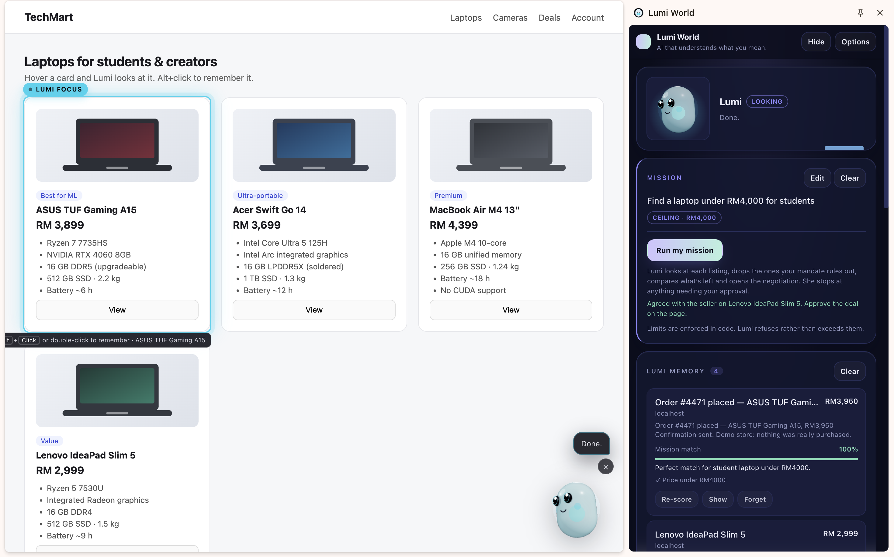
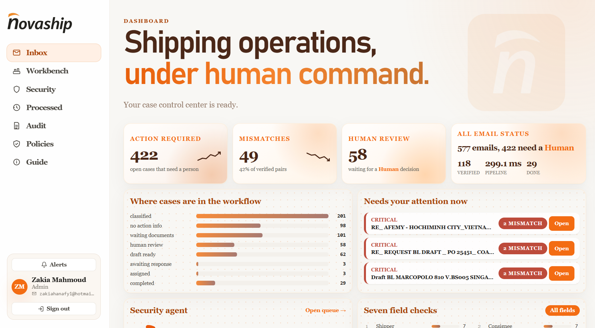
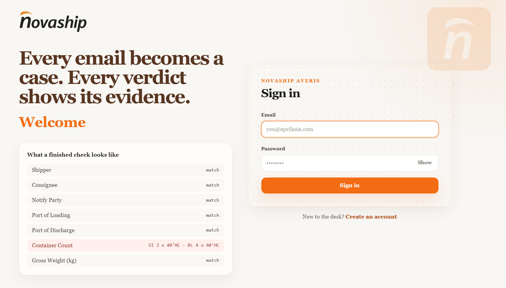
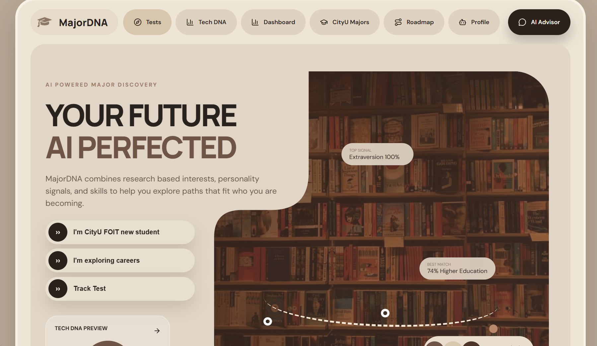
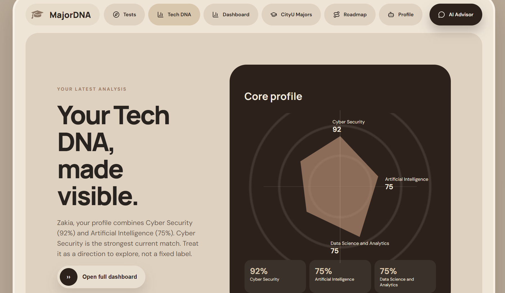
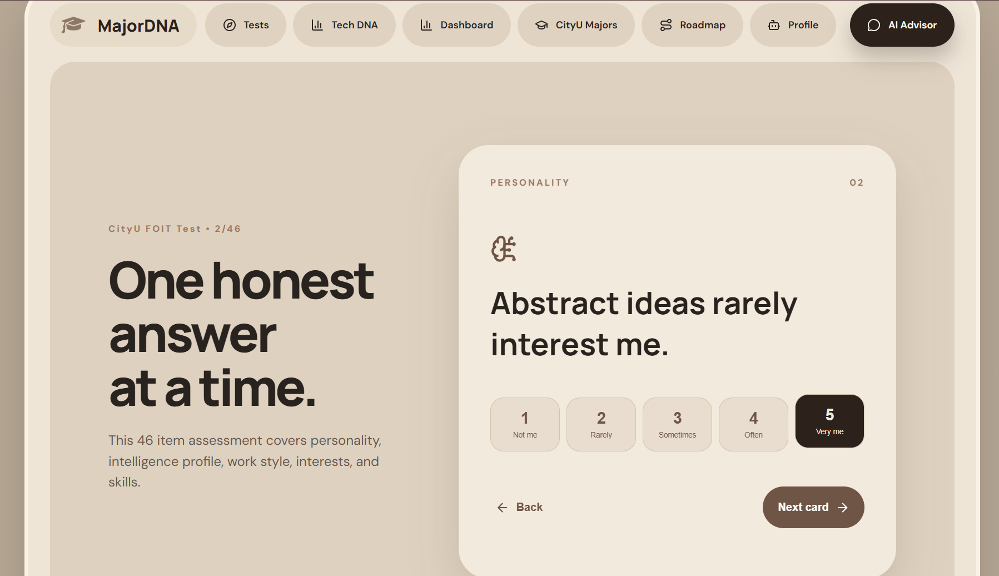
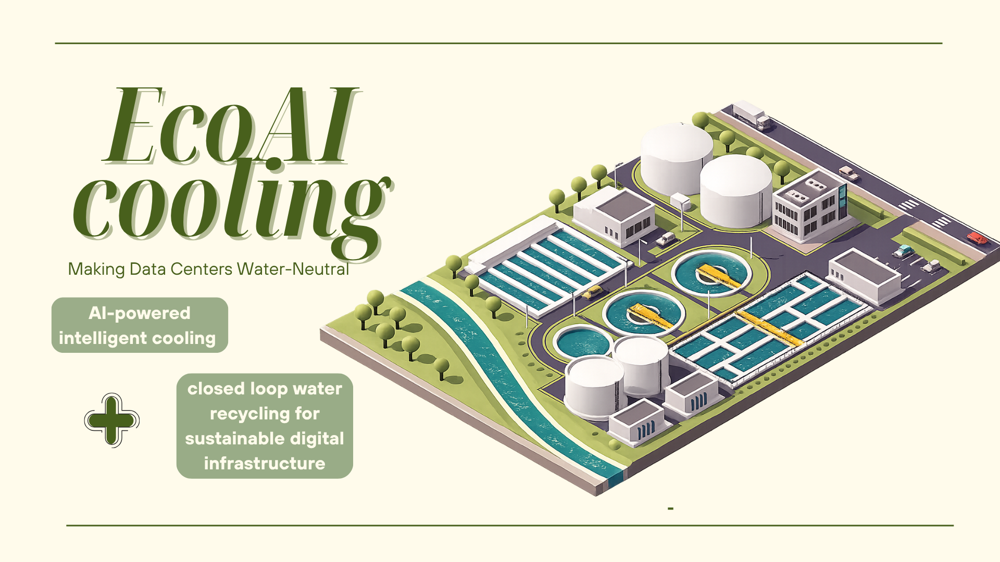

MULTI AGENT AI · 2026
AI Supply Chain Commander
AI agents that identify procurement needs, classify incidents, analyse suppliers, and support approval based recovery decisions.
AI AgentsSupabaseSlack
GitHub ↗SOFTWARE & AI/ML DEVELOPER · MALAYSIA
Building intelligent systems for real-world decisions, from AI-powered products to multi-agent workflows.
Explore portfolioPROJECTS & ACHIEVEMENTS
Explore my projects and achievements, from AI orchestration to tools that help students make career decisions.
Browse all projectsAI, software, and real-world impact.
Open collection ↓
MULTI AGENT AI · 2026
AI agents that identify procurement needs, classify incidents, analyse suppliers, and support approval based recovery decisions.

CHROME EXTENSION · AI
A shopping assistant that helps users stay within budget, compare choices, and negotiate with sellers.





CAREER RECOMMENDATION SYSTEM
An explainable desktop application that combines personality, intelligence, interests, skills, and work style assessments to guide university students toward suitable careers.

AI / ML · IOT · SUSTAINABILITY
A future facing concept for AI assisted data center cooling that uses sensor data to optimise cooling decisions and reduce water waste.
I'm Zakia, an AI track Computer Science student at City University Cyberjaya. I build modular software that turns ambiguous real world problems into useful, people first digital products.
My work sits at the intersection of full stack development, AI orchestration, and product thinking, from intelligent supply chain workflows to tools that help students make career decisions.
The tools and systems I use to build, analyse, and deploy thoughtful solutions.
Open to Software Development and AI/ML Development internship opportunities, collaborative projects, and meaningful conversations.